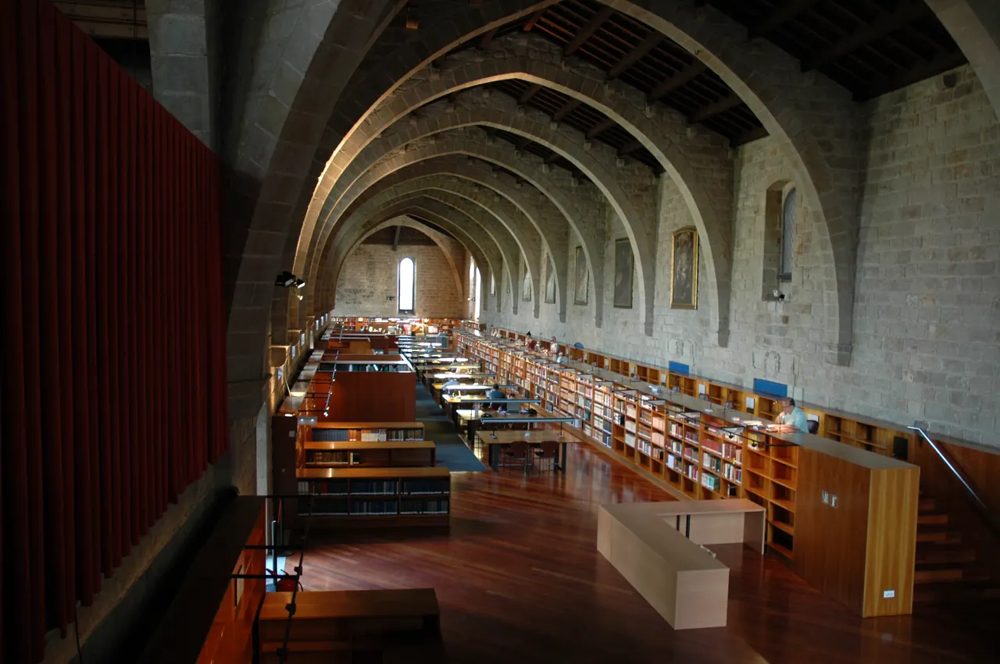

Biblioteca de Catalunya

| 지역 | Barcelona |
|---|---|
| 등급 | 우선 추천 |
| 언제 | Day 3 · 8/31시간표 기준 |
| 상세 | 챕터 본문에서 보기 |
| 지도 | Barcelona 실행지도 · 핀 이름 Biblioteca de Catalunya |
참고
오프라인입니다. 위키백과와 지도 링크는 연결되면 다시 동작합니다.
무엇인가 — 산 파우의 전편
1926년, 카레르 데 로스피탈에 있던 옛 산타 크레우 병원의 기능이 새 병원으로 옮겨갔다. 그 비워진 고딕 건물이 지금 카탈루냐 국립도서관이다.
즉 Day 2에 본 산 파우가 이 건물의 후계자다. 순서를 알고 가면 이 방문의 의미가 완전히 달라진다.
1401년, 도시에 흩어져 있던 작은 병원들을 하나로 합치기로 하면서 라발에 웅장한 고딕 건물이 세워졌다. 500년을 병원으로 쓰다가, 도메네크의 새 병원이 완성되자 도서관이 됐다.
왜 여기 오는가 관광지가 아니다. 조용하고, 사람이 적고, 에어컨이 있다. 8월 31일 오후의 열기를 피하는 실용적 선택이기도 하다. 고딕 열람실의 아치는 원래 병동이었다. 지금 책이 꽂힌 자리에 침대가 있었다.
실용
| 항목 | 값 |
|---|---|
| 요금·운영 | 재확인 |
| 체류 | 30–45분 |
| 위치 | 라발, Carrer de l’Hospital |
| 성격 | 실내. 우천·폭염 대체안으로 가치가 높다 |
추천등급: Priority
옛 Hospital de la Santa Creu의 고딕 건축을 사용하는 카탈루냐의 국가적 도서관이다. 관광객을 위한 화려한 도서관이 아니라 실제 연구기관이므로, 조용히 공간과 전시를 보고 필요한 경우 방문자 규정을 따른다.
운영: 월–금 09:00–20:00, 토요일 09:00–14:00. 체류 중에는 2026년 7월 23일–9월 13일 “Angelina Gatell, una vida compromesa” 전시가 예정되어 있다.
Jason·Julia 적합 이유: 여행의 지역 이해를 건축·문학·언어로 확장한다. 8월 31일 월요일 박물관 휴관 문제를 해결하는 핵심 장소다.